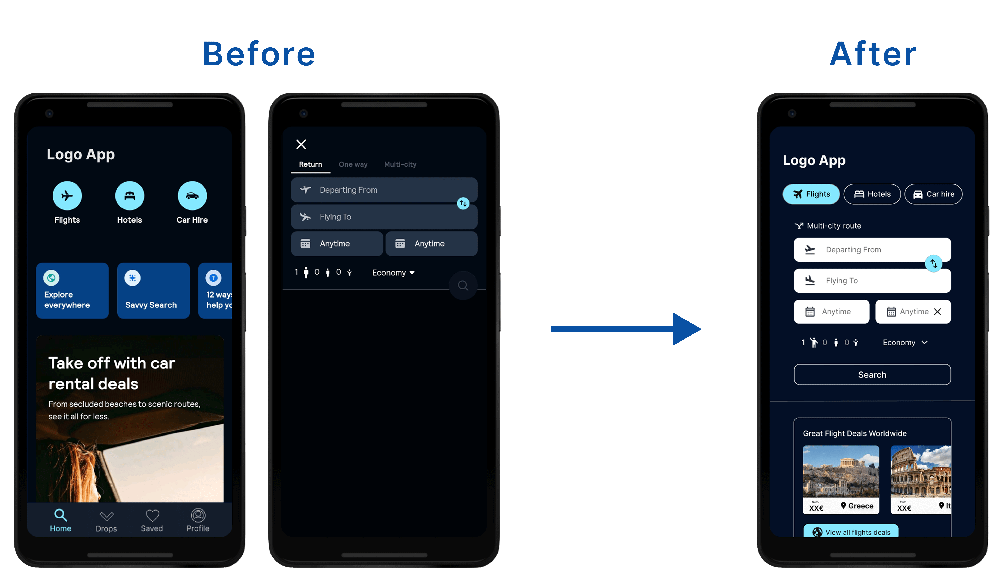

UX/UI Designer
Content Strategist
Figma, Photopea, FFmpeg
DurationFebruary 2025
2 Days
Preface
Skyscanner is a popular flight search engine that allows users to find and compare airfare across multiple airlines. As someone who frequently uses this app for trip planning, I wanted to explore potential improvements in its user experience and interface, focusing on the journey from the homepage to the flight details page.
❛❛ Skyscanner app is used by millions of user. To redesign something that is already have a existing user base is itself is a challenge.

With limited time following a typical design process was a challenge. When it came to user research I could not do more. But I did talk to some friends and asked their existing experience of using Skyscanner app and their pain-points.
I then began with careful observation of each screen, completing the desired task, going back and forward, taking notes on my initial thoughts like what's missing and what can be done to make user experience more intuitive. My goal was to refine the clarity, hierarchy, and efficiency of the experience while keeping familiar patterns intact.
Current App Issues & Initial Findings
UX Principles
Throughout the design process, I applied the key UX principles, particularly Fitts's Law and Hick’s Law, to enhance usability and efficiency.
I started by organizing the app’s structure and layout, focusing on improving usability and solving key issues. Beginning with rough sketches, I refined ideas to make the experience clearer, keeping familiar patterns for a smooth user experience.
Information Architecture

Paper Wireframes
Digital Wireframes

Key Improvements
Based on the current app issues I identified and the insights I gathered from wireframing, I made the following improvements:
In the current app, as an example, there was no clear Call-to-Action (CTA) for quick flight searches on the homepage. Users had to click the 'Flights' button just to access the search form. By placing the search directly on the homepage, I made the booking process faster and more intuitive.
Mockups
Final mockups showing the updated design after applying the key improvements.
The final product of this project is a clickable high-fidelity prototype hosted through Figma's prototype feature.
Redesigning of the Skyscanner app refined key usability aspects, making flight searches and bookings more intuitive. The flight booking process was improved, and the experience became simpler and easier to use.
The project displayed the balance between the known and the new; it maintained function as it is along with growing ease of use by way of minor yet effective design edits.
❛❛ Superb design isn’t just about adding features—it’s about enhancing the experience and making every step feel seamless.
(This project is an independent redesign created for educational purposes and is not affiliated with any existing company.)